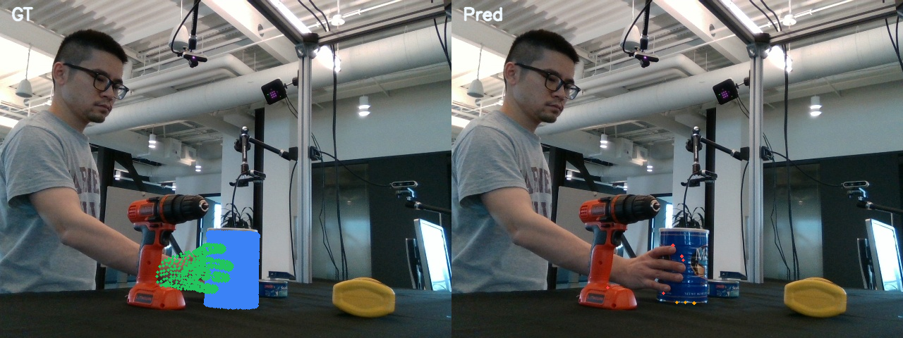
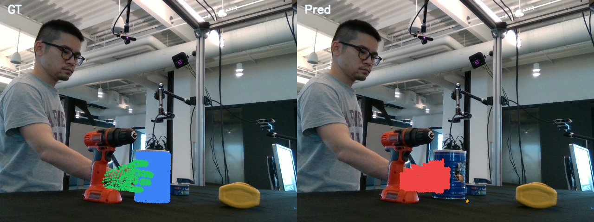
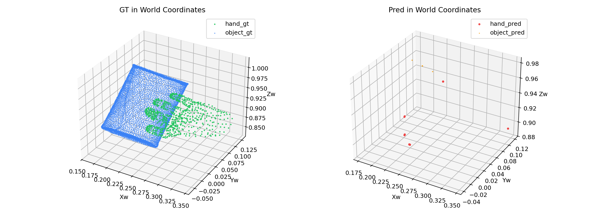

Overlay Compare
GT/pred overlays now use camera-depth ordering, so hand/object occlusion follows the actual depth relation instead of draw order.
This node separates two previously conflated failure modes. First, the native TRELLIS mesh decoder was emitting vertices in its internal normalized cube, but the pipeline treated them as metric hand/object local coordinates before pose transforms. Second, the overlay painter always drew object after hand, so the 2D view could visually invert occlusion. The current fix adds metric bbox de-normalization before pose lifting and uses camera-depth ordering in the overlay renderer.
projection_path_non_emptyprojection_path_non_empty
The root cause of the "non-empty world mesh but completely off-image" object bug was not the camera projection
formula. The corrected diagnosis shows the object now has valid_projection_count = 9 with camera-space
bbox [365.53, 433.25, 367.11, 435.87]. That confirms the projection path is alive again. The residual
problem is now a different one: the object prediction remains too small and too bottom-right compared with GT,
which points to remaining shape/occupancy collapse rather than a coordinate-frame bug.

GT/pred overlays now use camera-depth ordering, so hand/object occlusion follows the actual depth relation instead of draw order.

The object prediction is no longer fully outside the image. The remaining miss is a small projected cluster rather than zero valid pixels.

Hand prediction now aligns closely in world space. Object prediction stays non-empty but still collapses into a much smaller occupied region.